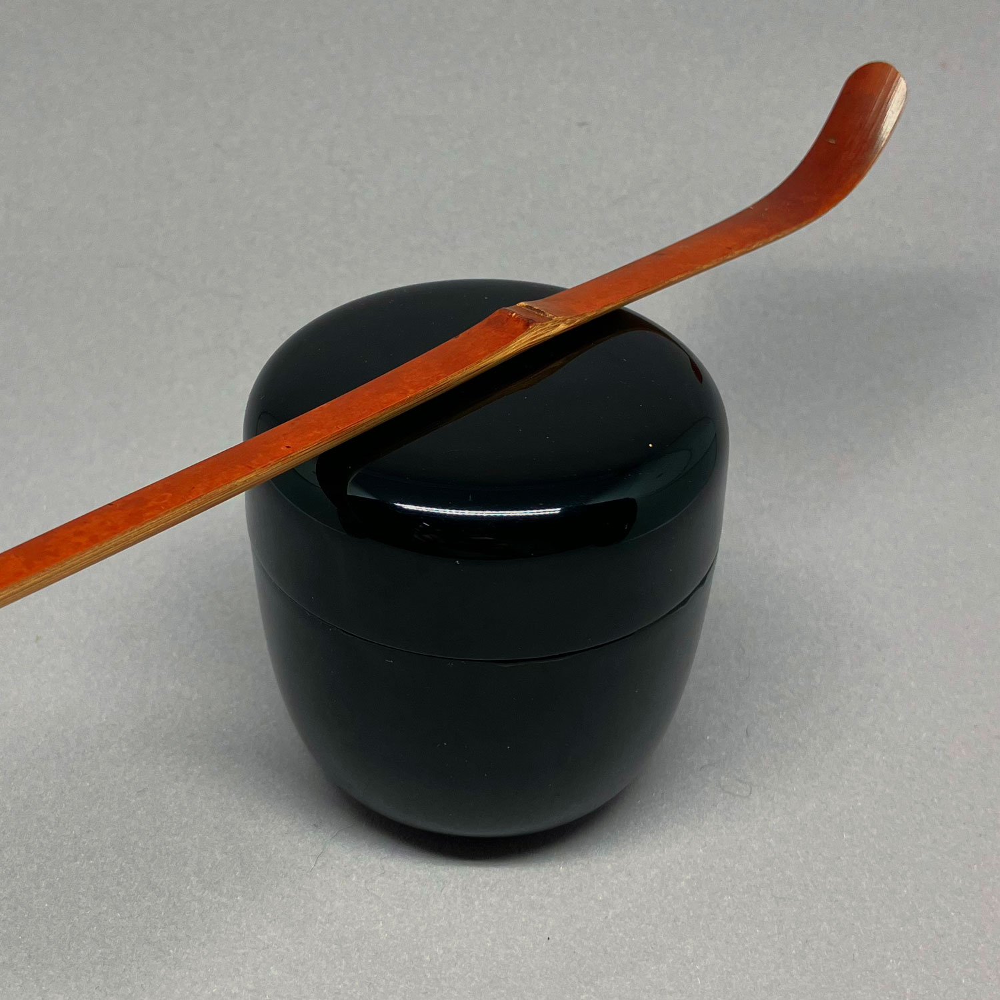
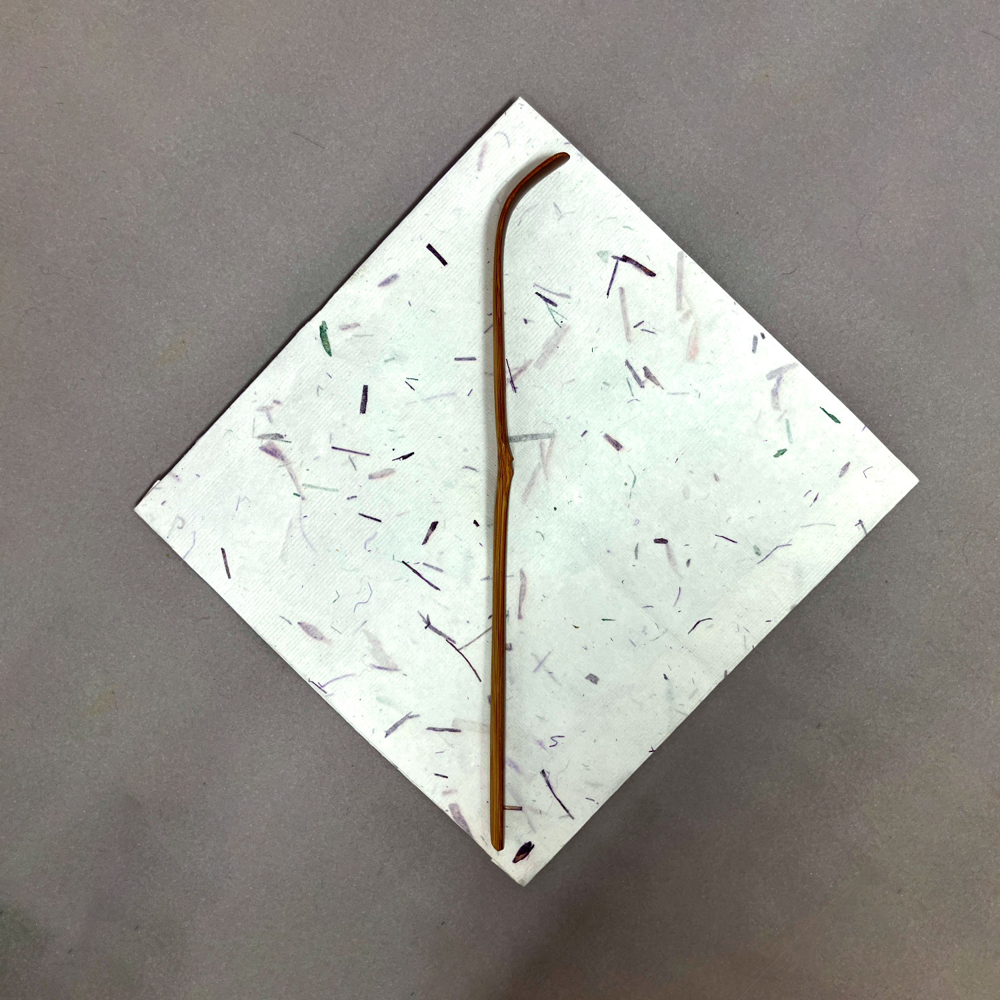
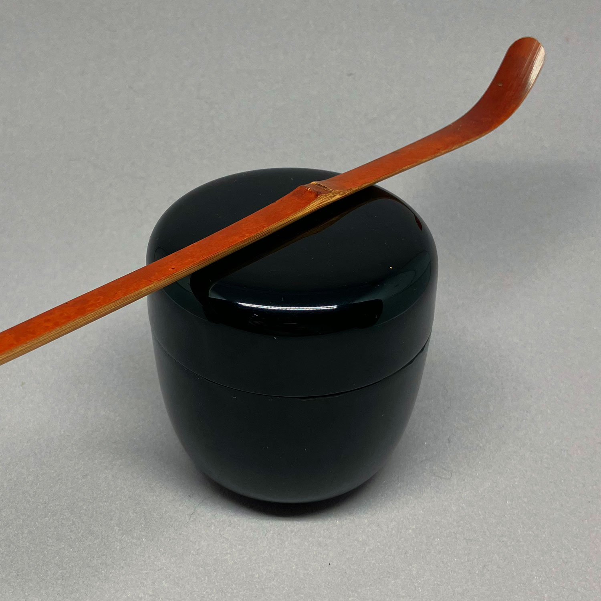
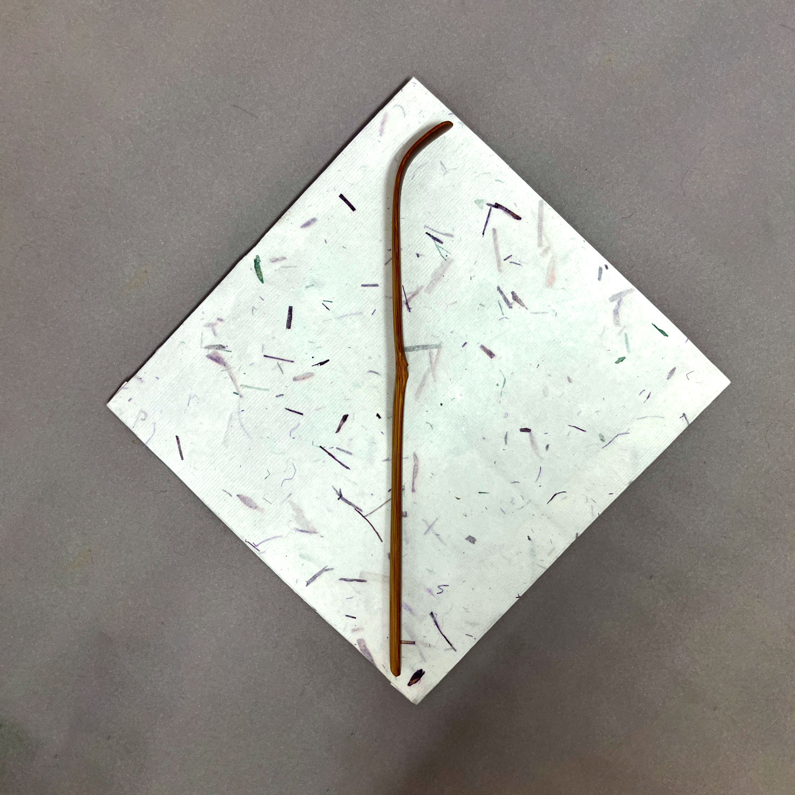
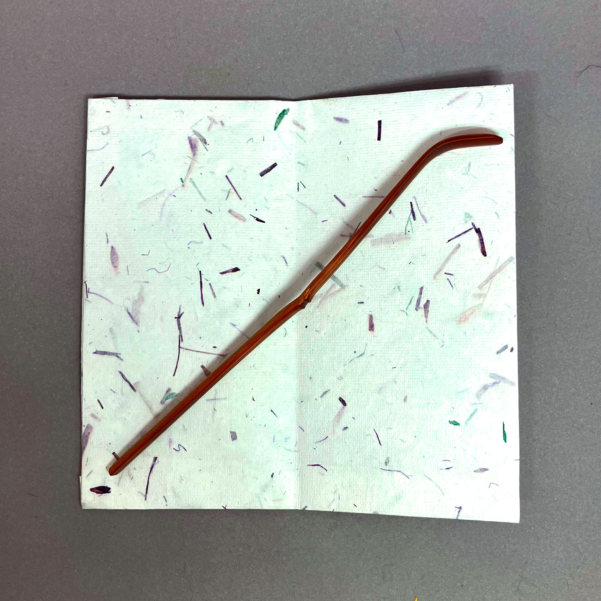
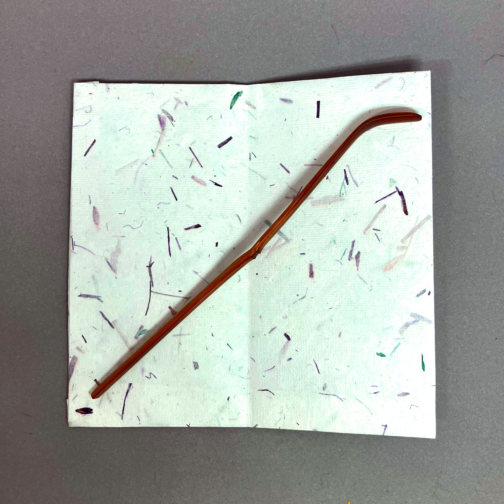
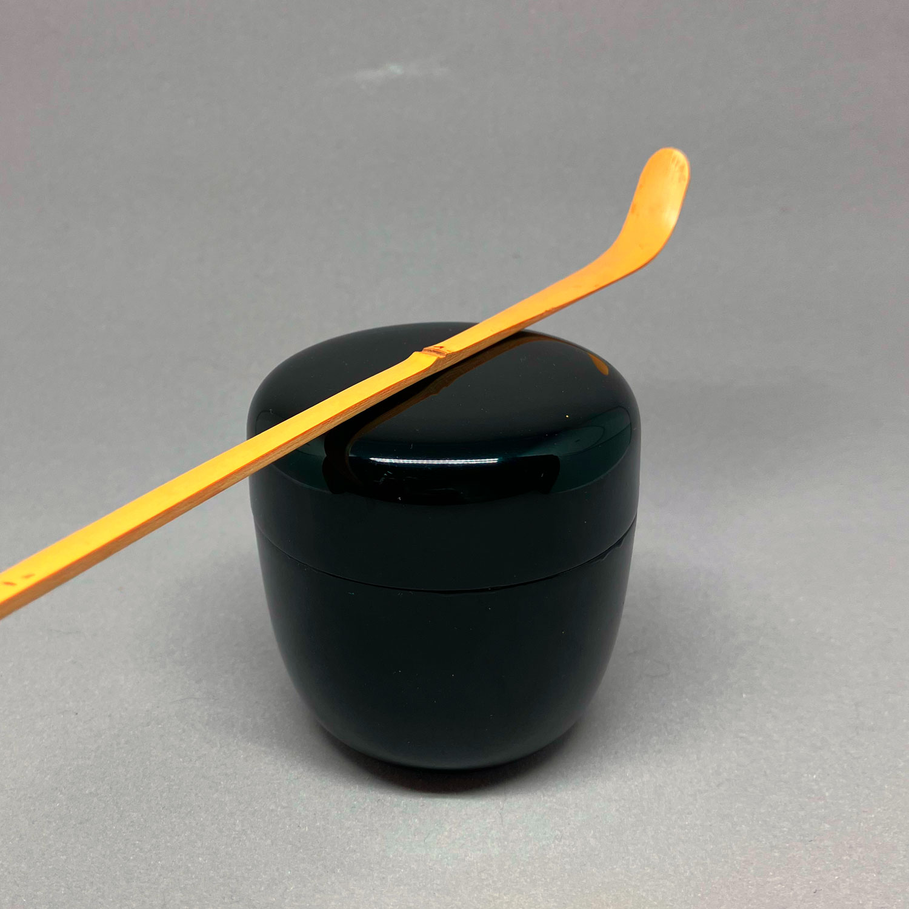
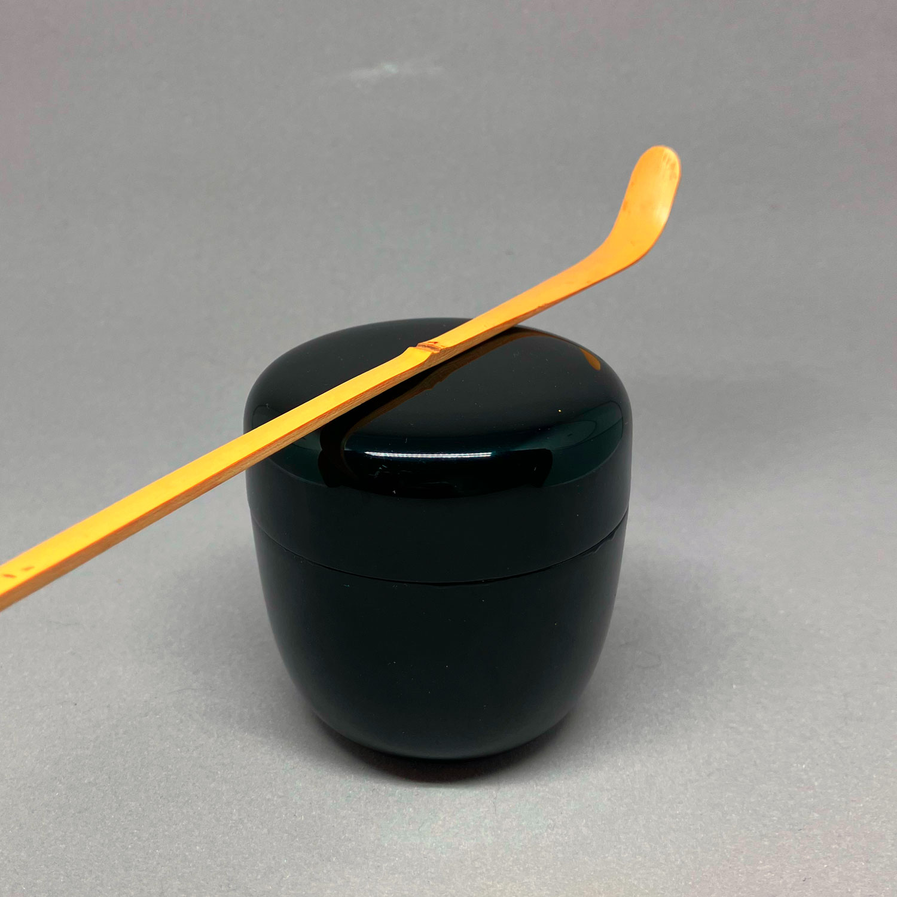

Dorf der Fallenden Blumen「花散里」
maker unknown 80 CHF
 



Dorf der Fallenden Blumen「花散里」
Dieser Teelöffel ist aus rußigem Bambus gefertigt. Er teilt seinen Namen mit Kapitel 11 in der berühmten Geschichte des Genji: 花散里, was verstreute Blumen im Dorf bedeutet. In diesem Kapitel verbringt Prinz Genji einen regnerischen Sommer-Nachmittag damit, über vergangene Tage zu sprechen und den Duft der gefallenen Zitrusblüten (橘) zu genießen. Ich denke, dass in diesem Teelöffel eine ähnliche Stärke und Melancholie steckt. Er eignet sich besonders gut für den Sommer und wird mit einer Papierschachtel und einem Papier-shifuku geliefert. Das quadratische Papier und die natsume dienen nur zum Größenvergleich und sind nicht enthalten.
Bestellen (Teelöffel, zum Preis von 80 CHF)Die Reispflanzende「早乙女」
made by Okada Saburo 180 CHF
 

Die Reispflanzende「早乙女」
made by Okada SaburoTraditionell bezieht sich der Begriff "saotome" auf die Frauen, die im Frühsommer Reis auf den Reisfeldern pflanzen, eine für den Reisanbau in Japan entscheidende Zeit. Das Pflanzen von Reis ist nicht nur für die Landwirtschaft von Bedeutung, sondern ist auch in kulturelle Rituale und Feste eingebettet, die das landwirtschaftliche Erbe Japans feiern und ehren.
Dieser Teelöffel ruft die Vorstellung und das Wesen des Frühsommers hervor und spiegelt eine Verbindung zum Land und dem zyklischen Charakter der Jahreszeiten wider. Diese Wahl symbolisiert eine Ehrerbietung für die Arbeit und Hingabe der Reispflanzer und betont die harmonische Beziehung zwischen menschlichen Aktivitäten und den Rhythmen der Natur.
Bestellen (Teelöffel, zum Preis von 180 CHF)Ein erstes Lächeln「初笑」
maker unknown 40 CHFWaldbad「森林浴」
maker unknown 40 CHF 

Waldbad「森林浴」
Dies ist eine einfache Bambus-Teeschaufel mit einigen interessanten Details in der Nähe des Bodens und in der Nähe des Knotens. Es fühlt sich erfrischend und elegant an, wie ein Spaziergang im Wald. Ihr Name, 森林浴, übersetzt sich wörtlich als Waldbaden oder, wissenschaftlicher ausgedrückt, als Silvotherapie. Während Menschen schon immer die ruhige Gelassenheit eines Waldes genossen haben, gewann der Begriff in den 1980er Jahren an Popularität, als Menschen versuchten, sich wieder mit der Natur zu verbinden.
In dieser Ansicht kann man nicht nur die einfache Bedeutung des Genießens der Natur finden, sondern auch das postindustrielle Verlangen und den Kampf der Menschheit, den Schaden rückgängig zu machen, den wir der Natur zugefügt haben.
Bestellen (Teelöffel, zum Preis von 40 CHF)